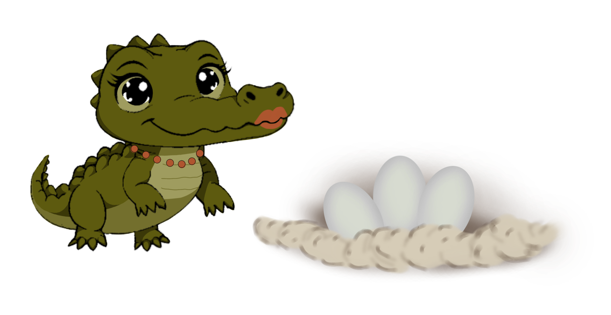

Размножение

Когда крокодилу исполняется 10 лет (а его длина становится 2–2,5 метра), он готов заводить потомство. Самцы громко ревут и хлопают мордой по воде, чтобы привлечь самок. Они показывают, кто самый сильный и большой. Самки выбирают самых крупных и смелых.
Гнездо и яйца

Самка находит тёплый песчаный берег рядом с водой и роет глубокую яму — около 60 сантиметров. Туда она откладывает от 20 до 95 яиц (обычно 55–60). Затем прикрывает их песком и листьями, чтобы спрятать от солнца и хищников.
Охрана кладки
Мама-крокодил почти три месяца (85–95 дней) охраняет гнездо. Она никого не подпускает близко — даже других крокодилов! Иногда ей помогает папа. Но если становится слишком жарко, самка ненадолго уходит к воде. В это время гнездо могут разорить мангусты или гиены.
Вылупление
Перед появлением на свет крокодильчики начинают издавать звуки, похожие на кряканье. Мама слышит их и раскапывает гнездо. Иногда она аккуратно помогает малышам выбраться, перекатывая яйца в пасти. Удивительно, но при всей своей силе она никогда не ранит детёнышей
Первые дни жизни
Новорождённые крокодильчики всего 30 сантиметров в длину и покрыты полосатой шкуркой. Самка берёт их в пасть и переносит к воде — так безопаснее. Первые месяцы малыши держатся рядом с мамой: она защищает их от хищников. Но из 50 яиц до взрослого возраста доживают лишь несколько крокодильчиков — так устроена природа.
ИНТЕРЕСНЫЕ ФАКТЫ
Пол крокодилов зависит от температуры в гнезде: в тепле рождаются самцы, в прохладе — самки. Крокодильчики растут всю жизнь: за 10 лет они вырастают с 30 см до 5 - 6 метров! Мама узнаёт своих малышей по голосу и всегда придёт на помощь.